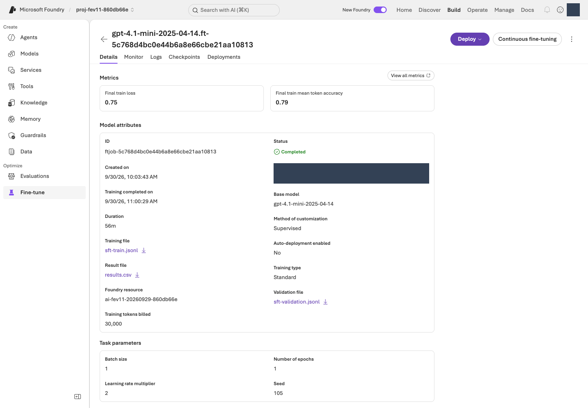

선택 부록 · Foundry SFT와 Frontier 접근 확인
참가자 6단계로 돌아가기 · 운영자 준비 · 실제 검증 상태
선택·별도 유료 경로입니다. 기본 루프를 끝내기 위해 실행할 필요는 없습니다.
참가자 실습은 본문 06에서 끝납니다. 이 부록은 별도 목적·승인이 있을 때만 진행하며, 기본 경로의 오류나 HOLD를 우회하는 수단이 아닙니다. 기존 실습 도구와 실행 증거는 그대로 유지합니다.
- Foundry SFT는 supervised 학습입니다. 실제 서비스의 작업·가중치 산출물·배포·평가가 있어야 학습/개선을 주장합니다.
- Frontier의 직접 일치하는 공식 API/지원 경로는 현재 조사에서
NOT_VERIFIED입니다. 찾지 못했다고 제품/API가 존재하지 않는다고 단정하지 않습니다. - 일반 SFT 작업을 Frontier 성공으로 바꿔 부르지 않습니다. 이번 신규 환경에서는 SFT 학습 succeeded → 실제 모델 배포 Succeeded → 동일 기반 모델 paired dev 평가까지 수행했습니다. 품질·사람의 운영 승인은 별개입니다.
경험할 기능: SFT(Supervised Fine-Tuning)는 입력과 원하는 응답 예시로 모델 가중치를 추가 학습하는 기능입니다. 이 실습은 JSON 형식·확인 질문·행동 분류 같은 안정된 행동을 학습 대상으로 삼고, 바뀌는 정책의 사실은 별도로 관리합니다.
| 방법 | 무엇을 바꾸나 | 언제 고려하나 |
|---|---|---|
| Foundry IQ / RAG | 답할 때 검색해 제공하는 근거 | 정책 최신성·관련 문서·출처가 문제일 때 |
| Agent Optimizer | 에이전트 지시 등 선택한 구성 | 같은 근거가 있어도 조건·행동 규칙을 잘 따르지 않을 때 |
| SFT | 기반 모델에서 출발한 학습 가중치 | 검토된 예시가 있고, 검색·지시 개선 이후에도 안정적인 행동 문제가 반복될 때 |
왜 따로 배우나요? SFT에는 학습뿐 아니라 파일 처리·배포·비교·지속 호스팅의 수명주기가 있습니다. 학습 파일 → 원격 job → fine_tuned_model → 모델 deployment → 실제 응답 평가를 각각 확인해야 합니다. 본문 Agent+IQ와 달리 여기서는 정적 정책 문맥을 넣은 모델 호출을 비교합니다. 더 큰 기능이므로 더 좋은 결과가 보장되는 것은 아닙니다.
S0. 학습을 시작할 수 있는지 먼저 판단
목적: “학습 가능” 카탈로그 표시와 실제 지역/모델/유형/권한 지원을 구별합니다.
할 일: 같은 Contoso 데이터에서 검색·지시를 고친 뒤에도 반복되는 안정적 행동 문제가 있는지 확인합니다. 바뀌는 정책을 가중치에 암기시키는 것이 목적이 아닙니다.
복사 명령 — 현재 어댑터 확인만:
python -m lab.sft --help
명령 해설: --help는 현재 설치된 저장소 어댑터의 하위 명령·옵션만 로컬 출력합니다. 사용 가능한 Azure 모델이나 내 계정의 학습 권한을 조회하지 않습니다. lab.sft는 이 저장소의 교육용 CLI이며 Microsoft 공식 명령 이름이 아닙니다.
| 확인 | 이 부록의 현재 조건 |
|---|---|
| 후보 기반 모델 | gpt-4.1-mini / 2025-04-14. 새 catalog Legacy, fineTune 지원 표식 관측. 실제 학습 지원은 별도 확인 |
| 지역 | 신규 NCUS 환경만. 다른 리전으로 자동 전환 금지 |
| 현재 코드 | lab.sft의 기본 adapter는 Standard 학습·Standard 배포를 검사 |
| 승인된 처리 범위 | 합성 자료의 Global/Developer 처리가 허용되어도 코드가 그 유형을 지원한다는 뜻은 아님 |
| 작업 규모 | SFT 1작업, train 56 / validation 12, 1 epoch, 작업당 최대 60분 대기 |
| 비용 | 학습·기반/학습 모델 추론·학습 모델 지속 호스팅·Judge를 별도 관측 |
| 입력 | 원본 test20와 fresh12를 학습/검증 파일에 넣지 않음 |
중요한 compatibility gate: bootstrap의 GlobalStandard 기반 배포를 이 Standard-only 비교 어댑터에 그대로 넣지 않습니다. bootstrap은 이제 명시적 Standard agent 계획을 지원합니다. 기존 GlobalStandard 계획은 바뀌지 않으므로, 필요하면 같은 아직 빈 RG에 대해 새 로컬 계획·scope-bound 승인·원래 receipt의 결속을 준비하고 한 계획만 적용합니다.
이전 gpt-4o-mini / 2024-07-18은 실제 생성 검증에서 ServiceModelDeprecated로 거부되었습니다. 실패 기록은 남기고, 모델 응답이 생기기 전에 primary agent와 SFT 기반을 모두 gpt-4.1-mini / 2025-04-14로 명시 교체했습니다. 실패한 구 모델의 응답/학습 점수가 있는 것처럼 비교하지 않습니다.
실제 승인된/지원되는 학습·배포 유형과 현재 어댑터가 다르면 여기서 중단합니다. 새 기반의 정확한 quota 이름은 OpenAI.Standard.gpt4.1-mini, tuned 배포는 OpenAI.Standard.gpt4.1-mini-finetune입니다. 관측한 여유(기반 5000, fine-tuned 500)는 배포·학습 완료나 무료 과금의 증거가 아닙니다. 이전 모델/GlobalStandard의 여유를 대신 쓰거나 예전 배포를 가져오지 않습니다.
완료 신호: 실제 모델·버전·학습 유형·배포 유형·NCUS 지원·현재 수명주기 조건·권한·남은 호출 범위를 확인했습니다. 이름이나 capability 표식만으로 통과하지 않습니다.
오류/복구: 지원/용량이 없으면 BLOCKED 또는 NOT_VERIFIED로 기록하고 핵심 루프의 보존으로 돌아갑니다.
재개: 같은 원래 계획에서 현재 지원을 다시 확인합니다. metadata 조회 성공을 학습 성공으로 표시하지 않습니다.
다음: 조건을 충족한 경우에만 S1.
S1. 학습 파일을 로컬에 준비
목적: train/validation만 추적 가능한 형식으로 준비합니다.
할 일: 본문의 .venv, LAB_ENV_FILE, LAB_ARTIFACTS_DIR를 그대로 사용합니다. 준비 폴더가 이미 있으면 재생성하지 말고 아래 manifest 읽기로 이동합니다.
복사 명령:
python -m lab tune-prepare --kind sft
python -m json.tool "$LAB_ARTIFACTS_DIR/tuning/sft/manifest.json"
명령 해설:
| 명령 | 하는 일·확인할 결과 |
|---|---|
tune-prepare --kind sft |
원본 생성물을 검사하고 train/validation을 tuning/sft/에 로컬 준비합니다. --kind는 준비 형식 선택이며 학습 유형을 원격 제출하는 옵션이 아닙니다. |
json.tool .../manifest.json |
파일별 행 수·바이트·SHA-256을 읽습니다. 데이터가 바뀌면 비교 조건도 바뀌므로 업로드 전 이 기록을 확인합니다. 모델 호출이나 업로드는 없습니다. |
| 파일 | 의미 |
|---|---|
sft-train.jsonl |
기존 train 56건만 |
sft-validation.jsonl |
기존 validation 12건만 |
manifest.json |
행 수·바이트·해시와 PREPARED_NOT_SUBMITTED |
sft-state.json |
이후 실제 준비/파일/작업/모델 상태. 서비스 실행 후 생성·갱신 |
현재 어댑터가 준비하는 파일은 UTF-8 BOM을 포함합니다. 생성기/서비스 계약을 확인하지 않고 encoding이나 메시지 열을 임의로 바꾸지 않습니다. SFT user 메시지는 query/context, assistant 메시지는 학습 정답이며 평가 전용 레이블을 user 입력에 붙이지 않습니다.
완료 신호: 56/12건과 해시가 맞고 test/fresh holdout이 없습니다. 준비 완료는 학습 완료가 아닙니다.
오류/복구: 기존 준비 폴더를 지우거나 validation/test를 섞어 파일 수를 맞추지 않습니다.
재개: 기존 manifest·원장을 읽습니다. 준비 기록의 PREPARED_NOT_SUBMITTED를 나중의 job 성공 상태로 손으로 고치지 않습니다.
다음: S2.
S2. 같은 기반 모델의 학습 전 기준선
목적: 모델 계열이 다른 비교를 “튜닝 효과”로 보고하지 않습니다.
할 일: S0에서 확인한 현재 어댑터와 호환되는 신규 기반 배포를 운영자가 같은 새 RG 안에 준비한 뒤 실제 이름을 입력합니다. 준비되지 않았다면 이 단계는 미실행입니다.
위 Standard agent 계획을 실제로 적용했다면 해당 비공개 .env의 검증된 MODEL_DEPLOYMENT가 기반 후보입니다. 값만 복사하지 말고 실제 모델·버전·Standard SKU를 대조합니다. 튜닝되지 않은 다른 계열의 배포나 기존 GlobalStandard 계획의 이름으로 바꾸지 않습니다.
복사 명령 — 유료 기준선, dev 12건:
export SFT_BASE_DEPLOYMENT="YOUR_VERIFIED_NEW_SFT_BASE_DEPLOYMENT"
python -m lab.sft --config "$LAB_ENV_FILE" baseline --base-deployment "$SFT_BASE_DEPLOYMENT" --run-id sft-pre-dev --interval-seconds 15 --confirm
python -m lab score --run-id sft-pre-dev
cat "$LAB_ARTIFACTS_DIR/runs/sft-pre-dev/report.md"
명령 해설:
| 명령 | 하는 일·비용 경계 |
|---|---|
export SFT_BASE_DEPLOYMENT=... |
검증한 튜닝 전 모델 배포 이름을 저장합니다. 모델 계열명이나 학습 job ID를 입력하지 않습니다. |
baseline --base-deployment ... --run-id sft-pre-dev --interval-seconds 15 --confirm |
기반 배포에 dev 12건을 유료 실행하고 runs/sft-pre-dev/에 응답과 설정을 남깁니다. 사례 사이 15초 대기이며 학습을 제출하지 않습니다. |
score --run-id sft-pre-dev |
저장 응답을 로컬 규칙으로 집계합니다. 별도 Judge를 실행하지 않았으므로 없는 의미 점수를 만들어 넣지 않습니다. |
cat .../report.md |
집계 보고서를 터미널에 읽어 표시합니다. 모델 호출이나 보고서 수정은 없습니다. |
완료 신호: 학습 전 동일 기반 모델·생성 설정·프롬프트·dev 전체 응답과 원장 연결이 있습니다. 높은 점수는 학습 제출 조건이 아니며 어떤 안정적 행동을 고칠지 설명해야 합니다.
오류/복구: 401/403/SKU/모델 불일치면 제출하지 않습니다. 원래 실패 행을 없애거나 다른 계열 모델의 점수를 기준선으로 가져오지 않습니다.
재개: 기존 기준선과 원장을 보존합니다. 모델 구성이 바뀌면 같은 실험으로 이어갈 수 없으며 별도 계획이 필요합니다.
다음: S3.
S3. 실제 업로드와 한 번의 학습 요청
목적: 파일 업로드·처리·학습 제출을 각각 확인하고 중복 작업을 막습니다.
할 일: 유효한 승인, 실제 지원 유형, 남은 호출/작업 범위를 다시 확인합니다. 포털과 CLI에서 같은 작업을 각각 제출하지 않습니다.
복사 명령 — 업로드 후 상태 확인:
python -m lab.sft --config "$LAB_ENV_FILE" upload --confirm
python -m lab.sft --config "$LAB_ENV_FILE" status
명령 해설: upload --confirm은 준비 파일 두 개를 해당 Foundry 환경으로 전송하고 원격 파일 ID를 tuning/sft/sft-state.json에 기록합니다. 아직 학습은 시작하지 않습니다. 이어지는 status는 기록된 파일의 처리 상태를 원격 조회해 원장을 갱신합니다. 로컬 파일 존재와 서비스의 processed는 서로 다른 상태입니다.
첫 완료 신호: 실제 파일 ID 두 개가 원장에 저장되고 둘 다 processed입니다. 업로드 요청을 보냈다는 사실만으로 준비 완료가 아닙니다.
이후에만 한 번 제출합니다.
python -m lab.sft --config "$LAB_ENV_FILE" submit --confirm
python -m lab.sft --config "$LAB_ENV_FILE" status
명령 해설: submit --confirm은 처리된 파일 ID·기반 모델·승인 조건을 사용해 유료 SFT job 1개를 요청합니다. 기본 epoch 1은 학습 데이터를 한 번 순회한다는 뜻입니다. 뒤의 status는 그 job의 현재 상태를 조회할 뿐 새 job을 만들지 않습니다. 작업 ID가 기록되면 상태가 대기 중이어도 다시 submit하지 않습니다.
현재 기본 제출은 supervised, 1 epoch, seed 105와 어댑터가 검증하는 학습 유형입니다. 학습 모델 ID/작업 ID를 예상해서 채우지 않습니다.
완료 신호: 원장의 실제 job ID와 서비스 상태가 일치합니다. 제출 완료는 학습 완료가 아닙니다.
오류/복구: SUBMITTING/SUBMISSION_UNKNOWN은 작업이 없다는 뜻이 아닙니다. 포털/원격 목록에서 요청 시각·기반 모델·파일 ID를 대조하기 전 재제출하지 않습니다. 원장을 지워 두 번째 job을 만들지 않습니다.
재개: 기록된 파일 ID는 재업로드하지 않고 같은 job의 status만 조회합니다. 알 수 없는 결과는 원격 복구가 먼저입니다.
다음: S4.
S4. 실제 학습 완료와 산출물 확인
목적: 준비·제출·대기·실패·학습 성공을 구별합니다.
복사 명령 — 한 번씩 조회:
python -m lab.sft --config "$LAB_ENV_FILE" status
명령 해설: 원장에 있는 실제 파일·job·모델·배포의 현재 상태를 조회하고 관측 기록을 남깁니다. 로컬 score와 달리 Azure 연결은 필요하지만 새 학습·추론은 시작하지 않습니다. 실패 이유, 실제 모델 ID, 완료 시각을 각각 확인합니다.
할 일: 최대 60분의 합의된 대기 범위 안에서 상태를 확인합니다. succeeded와 실제 fine_tuned_model이 모두 있어야 합니다. 학습/검증 loss는 과적합 진단 자료이며 고객지원 정확도나 안전 점수가 아닙니다.
명시적인 상한으로 같은 작업만 기다릴 수도 있습니다. 시간 초과로 원격 작업을 다시 제출하거나 자동 취소하지 않습니다.
python -m lab.sft --config "$LAB_ENV_FILE" wait --timeout-seconds 3000 --interval-seconds 60
명령 해설: 같은 job을 최대 3,000초(50분) 동안 60초 간격으로 상태 조회합니다. 여기서 --interval-seconds는 추론 사례 간 대기가 아니라 상태 조회 간격입니다. 이 명령의 대기 상한이 서버 학습을 취소하거나 비용을 차단하지는 않습니다.
이번 작업은 56 train/12 validation, 1 epoch에서 30,722 trained tokens를 반환했고 실제 학습 모델 ID가 생겼습니다. 상태 조회마다 job-observations/에 원본 응답을 보존했습니다. 서비스의 trainingType: standard는 동일한 Standard 유형의 표기 차이이며 Global/Developer로 자동 전환한 것이 아닙니다.

학습 지표는 이렇게 읽습니다. Loss는 학습 예시의 다음 토큰 예측 오차이고 낮아지는 추세를 봅니다. Train mean token accuracy 0.79는 고객지원 업무 정확도 79%가 아닙니다. 학습 데이터에만 잘 맞았을 수 있으므로 dev 비교가 필요합니다. 화면의 Training tokens billed 30,000과 원본 API의 trained_tokens 30,722는 다른 출처·필드의 값으로 보존하며 임의로 맞추거나 실제 청구 금액으로 환산하지 않습니다. Monitor·Checkpoints는 학습 진단, Deployments는 호출 가능한 배포 확인에 사용합니다.
완료 신호: 실제 job·모델 ID, 결과 파일/관측 토큰, 지원되는 배포 계약을 확보했습니다.
오류/복구: 실패/취소/대기 상태를 성공으로 바꾸지 않습니다. 60분을 넘겼다고 자동 재제출하지 않습니다. 대기를 끝내도 서버 작업이 자동 취소되지는 않습니다.
재개: 원래 job ID로 상태를 읽습니다. 취소는 별도로 승인된 경우에만 해당 job에 수행하며 자원 삭제와도 다릅니다.
다음: S5.
S5. 학습 모델을 실제로 배포하고 비교
목적: 같은 기반/학습 모델의 동일 조건 비교를 수행합니다. Agent Service+IQ 비교와 별도입니다.
할 일: 실제 학습 모델의 배포 지원·quota·지속 호스팅 비용·현재 어댑터의 SKU를 확인합니다. 아래 capacity는 ARM 단위의 예시이며 실제 승인 계획 값으로 검토합니다.
현재 deploy 명령은 실제로 succeeded한 자기 SFT 작업의 산출물만 사용하고, BOOTSTRAP_CONFIG에 연결된 완료된 신규 bootstrap 소유권을 확인합니다. 빈 RG나 단순한 계획 파일로는 통과하지 않습니다. 소유 확인과 별개로 현재 비용/처리/작업 범위와 fine-tuned quota도 충족해야 합니다. 포털 수작업 배포만이 가능한 경로라고 가정하지 않습니다.
복사 명령 — 실제 성공한 학습 모델에만:
export SFT_TUNED_DEPLOYMENT="YOUR_NEW_SFT_TUNED_DEPLOYMENT"
python -m lab.sft --config "$LAB_ENV_FILE" deploy --deployment "$SFT_TUNED_DEPLOYMENT" --capacity 20 --confirm
python -m lab.sft --config "$LAB_ENV_FILE" status
명령 해설: export는 새 학습 모델의 배포 이름을 정합니다. deploy는 성공한 자기 job의 실제 모델을 그 이름으로 원격 배포하고 소유 원장에 남깁니다. --capacity 20은 검증할 ARM 용량 단위이며 모든 모델에 같은 TPM 환산을 적용하지 않습니다. 지속 호스팅 과금이 시작될 수 있습니다. status로 실제 준비 상태를 확인하며, 이름만 정했다고 배포된 것으로 보지 않습니다.
배포가 실제 준비된 후 dev를 비교합니다.
python -m lab.sft --config "$LAB_ENV_FILE" run-pair --base-deployment "$SFT_BASE_DEPLOYMENT" --tuned-deployment "$SFT_TUNED_DEPLOYMENT" --split dev --run-prefix sft-dev --interval-seconds 10 --confirm
python -m lab score --run-id sft-dev-base
python -m lab score --run-id sft-dev-tuned
명령 해설: run-pair의 --base-deployment·--tuned-deployment는 같은 계열의 두 실제 배포입니다. --split dev의 12건을 각각 실행하므로 정상 계획은 12×2 모델 응답이고, --run-prefix sft-dev에서 sft-dev-base·sft-dev-tuned 두 기록이 만들어집니다. 10초는 사례 간 대기입니다. 뒤의 두 score는 각 run의 저장 응답만 로컬 집계하며 추가 모델/Judge 호출은 없습니다.
두 arm에는 같은 system·query/context·생성 설정을 사용합니다. 정적 참조 정책을 제공한 모델 비교이며 실제 IQ 검색·MCP·버전 에이전트 실행 비교가 아닙니다.
이번 실제 paired 결과
| 로컬 검사 | 기반 gpt-4.1-mini | 해당 기반에서 학습한 모델 |
|---|---|---|
| 전체 dev 행 | 12 | 12 |
| JSON 계약 통과 | 12/12 | 12/12 |
| route 일치 | 10/12 | 11/12 |
| 필수 인용 통과 | 9/12 | 11/12 |
| 중요 규칙 실패 | 2 | 1 |
| API 오류 | 0 | 0 |
| 관측 총 토큰 | 7,385 | 7,226 |
모델·버전 계열, 정적 정책 문맥, system prompt, temperature 0, seed 105, Standard SKU와 capacity 20을 맞췄습니다. 작은 합성 dev 한 번의 결과이며 중요 실패가 남아 있어 운영 합격이 아닙니다. test20/fresh12를 학습에 사용하거나 이 dev 결과를 독립적인 실세계 개선율로 바꾸어 부르지 않습니다.
학습 모델의 Standard 호스팅은 유휴 상태에서도 과금될 수 있습니다. 확인한 참고 단가는 USD 1.70/시간이며 이는 실제 청구액이 아닙니다. 삭제 승인 없이 자동 정리하지 않습니다.
완료 신호: 같은 기반 모델/버전의 base/tuned 원본 응답·오류·지연·관측 토큰이 보존됩니다. 데이터나 프롬프트까지 바꾸면 SFT만의 효과로 주장하지 않습니다.
오류/복구: 한쪽 실행/score가 없으면 비교하지 않습니다. 낡은 점수를 새 모델 점수로 재사용하지 않습니다. 남은 300회 호출 범위에 들어가지 않으면 추가 평가를 멈춥니다.
재개: 이미 있는 pair를 덮어쓰지 않습니다. 알려진 저장 상태를 확인하고 재호출이 필요한 새 실험은 운영자가 별도로 판단합니다.
다음: S6.
S6. 평가·보류·보존
목적: 학습이 끝났다는 사실과 미노출 성능·운영 승인을 분리합니다.
할 일: dev/validation으로만 후보를 고르고, 실제 지원되는 같은 Judge 계약으로 평가합니다. 일반 managed 평가를 진단에 사용하려면 아직 다른 Judge를 적용하지 않은 두 run에만 제출합니다.
복사 명령 — 별도 평가 비용·지원 조건 확인 후:
python -m lab --config "$LAB_ENV_FILE" evaluate submit --run-id sft-dev-base --confirm
python -m lab --config "$LAB_ENV_FILE" evaluate submit --run-id sft-dev-tuned --confirm
python -m lab --config "$LAB_ENV_FILE" evaluate collect --run-id sft-dev-base
python -m lab --config "$LAB_ENV_FILE" evaluate collect --run-id sft-dev-tuned
python -m lab score --run-id sft-dev-base
python -m lab score --run-id sft-dev-tuned
명령 해설:
| 명령 쌍 | 하는 일·확인할 결과 |
|---|---|
두 evaluate submit --run-id ... --confirm |
base와 tuned의 이미 저장된 답변을 각각 managed 평가에 유료 제출합니다. 에이전트/모델 답변을 다시 생성하지 않으며 각 run의 managed-eval.json에 eval/run ID를 남깁니다. |
두 evaluate collect --run-id ... |
기록된 원격 평가를 조회·수집합니다. 처리 중이면 같은 ID로 collect만 이어가며 미완료를 점수 0 또는 PASS로 바꾸지 않습니다. |
두 score --run-id ... |
수집한 Judge와 원래 응답을 각각 로컬 재집계합니다. 수집 전후의 범위를 확인하고 두 arm의 누락도 함께 봅니다. |
내장 지표는 그 저장된 입력/정의에 대한 진단이며 새로운 업무 전용 교정이나 운영 승인을 대신하지 않습니다. static context를 실제 검색 근거라고 표시하지 않습니다. 같은 run에 다른 Judge를 이어 붙여 재채점하지 않습니다.
원본 test20을 아직 보지 않았고 별도 SFT 실험의 후보·기준이 동결되었으며 남은 작업 범위가 충분한 경우에만 다음 paired 모델 시험을 검토할 수 있습니다.
python -m lab.sft --config "$LAB_ENV_FILE" run-pair --base-deployment "$SFT_BASE_DEPLOYMENT" --tuned-deployment "$SFT_TUNED_DEPLOYMENT" --split test --run-prefix sft-test --confirm
명령 해설: 같은 두 모델을 원본 test 20건씩, 총 40응답으로 비교하는 별도 유료 시험입니다. --run-prefix sft-test는 dev 결과와 섞이지 않는 두 저장 ID를 만듭니다. 본문 fresh12를 사용하지 않으며, 동결·미노출·승인 조건을 사람이 먼저 확인해야 합니다.
이것은 본문의 fresh12 에이전트 시도와 별도 계약입니다. 실행·Judge·로컬 score가 두 arm 모두 완전하기 전 compare로 통과를 주장하지 않습니다. 작은 test20은 광범위한 일반화나 튜닝 효과의 보장이 아닙니다.
완료 신호: SFT 작업 성공/배포/모델 비교/품질/사람 판단을 따로 기록했습니다. 못 한 단계는 미실행입니다. 사람의 별도 운영 승인 없이는 전환을 보류합니다.
오류/복구: 누락·실행 오류·critical 실패·Judge 불일치는 HOLD입니다. test를 보고 다시 맞추었다면 그 질문은 더 이상 미노출이 아닙니다.
재개: 작업·배포·응답·평가 원장을 보존합니다. 새 RG·기반/학습 모델·파일을 자동 삭제하지 않습니다. 삭제 승인은 없습니다. 호스팅 비용은 학습 종료/터미널 종료만으로 멈추지 않으므로 운영자와 다음 비용 확인 시점을 정합니다.
다음: 핵심 경로의 보존 기록.
Frontier의 별도 확인 체크포인트
목적: 공개적으로 확인하지 못한 기능의 메뉴/API를 만들어 내지 않으면서 준비 가능한 것을 준비합니다.
할 일: 현재 공식 지원 안내와 해당 환경의 실제 참여·모델·지역·데이터/처리·실행 경로를 담당 지원 경로에서 확인합니다. 일반 SFT 화면이나 모델 metadata의 fineTune 표식으로 대체하지 않습니다.
복사 명령 — 중립 로컬 자료만:
python -m lab tune-prepare --kind frontier
명령 해설: tuning/frontier/에 train/validation 원본과 중립적인 실험 설명·manifest만 로컬 준비합니다. 확인되지 않은 Frontier 업로드 스키마로 변환하거나 원격 학습을 제출하지 않습니다. 일반 SFT와 이름만 바꾼 동등 기능이 아니므로, 실제 지원 경로 확인 전에는 여기서 멈춥니다.
완료 신호: train 56/validation 12와 실험 목표·평가 계획을 준비한 PREPARED_NOT_SUBMITTED. 서비스 전용 업로드 스키마나 실제 Frontier 학습 작업을 구현했다는 뜻이 아닙니다.
오류/복구: 현재 직접 일치하는 공식 API/지원 경로를 확인하지 못했다면 NOT_VERIFIED입니다. 존재하지 않는다거나 특정 테넌트가 영구적으로 거절되었다고 단정하지 않습니다.
재개: 공식 현재 계약과 실제 참여/데이터 사용 조건이 확인된 때에만 그 경로를 따릅니다. 별도 harness/endpoint가 필요하다면 기존 agent --stage tuned 하나로 자동 통합된다고 하지 않습니다.
다음: 미확인이면 보존·인수 기록에 상태를 남깁니다. SFT 성공을 Frontier 성공으로 대체하지 않습니다.
공식 참고
지원표·가격·수명주기는 실행 전에 다시 확인합니다. 가이드 제작이나 mock 테스트로 실제 학습·개선·안전성을 검증했다고 표시하지 않습니다.